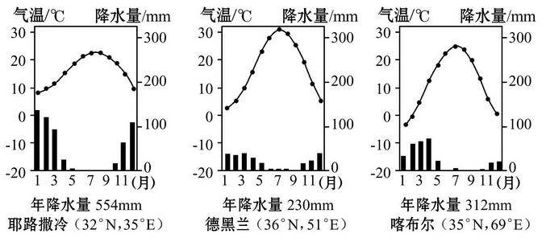

北半球冬夏季气压中心练习
幻灯片切换效果
None - Fade - Slide - Convex - Concave - Zoom
选择班级
幻灯片样式
Black (default) -
White -
League -
Sky -
Beige -
Simple
Serif -
Blood -
Night -
Moon -
Solarized
1.海陆分布对大气环流的影响是( )
A.1月份，北半球的副热带高气压带被大陆上的热低压切断，使副热带高气压带仅保留在海洋上
B.7月份，北半球的副极地低气压带被大陆上的冷高压切断，使副极地低气压带只保留在海洋上
C.纬向分布的气压带南半球比北半球明显
D.冬、夏季的高低气压中心很稳定，不随季节变化
2.当亚欧大陆被大陆高气压控制时，下列叙述正确的是( )
A.副热带高气压带被热低压切断
B.副极地低气压带被冷高压切断
C.此时地球公转至远日点附近
D.此时全球的气压带和风带向北移动
3.形成季风的重要原因是( ) ①海陆热力性质差异 ②气压带和风带位置的季节性移动 ③地形 ④洋流
A.①②
B.③④
C.①③
D.②④
4.指出下列四组气候类型中，判断正确且与图中顺序相符的是( )
A.①热带沙漠气候 ②温带海洋性气候 ③亚热带季风气候 ④温带大陆性气候
B.①温带海洋性气候 ②亚热带季风气候 ③地中海气候 ④温带季风气候
广东省大部分地区位于北回归线附近，与世界同纬度大陆西岸相比，气候有差异。据此回答5、6题。
5.广东与世界同纬度大陆西岸相比其气候特征是( )
A.夏季温度高、降水多
B.冬季温度低、降水少
C.冬季温度低、夏季降水多
D.夏季温度高、冬季降水少
6.造成广东省上述特征的主要原因是( )
A.地形因素
B.海陆位置
C.季风影响
D.洋流影响
7.读下图，回答下列问题。

(1)此图表示的是[7月季风图。E的风向为[东南]风，F的风向为[西南]风。
(2)A、B、C三地中，气压最低的是[B]。
(3)盛行E季风时，我国东部地区的气候特点是[高温多雨]。
(4)E季风的成因主要是[海陆热力性质差异]。在成因上，F季风与E季风的最大区别是[F季风主要受气压带、风带季节移动的影响 ]
读近地面的等压线图，回答1、2题。
1.下列现象可以用来说明海陆分布对大气环流产生影响的是 ①30°～40°纬度大陆西岸冬季温和湿润，夏季炎热干燥 ②南半球气压带基本呈带状分布 ③在相同的纬度上，由于海陆分布形成海洋性和大陆性两种不同气候 ④30°～40°纬度大陆东岸形成季风环流
A.①③
B.②④
C.①②
D.③④
(2010·北京学业水平测试)读图，结合所学知识，回答2、3题。
2.图中四个箭头中能正确表示全球该纬度带近地面盛行风向的是( )
A.①
B.②
C.③
D.④
3.在大陆西岸，长年受该纬度带盛行风影响的气候类型是
A.地中海气候
B.温带大陆性气候
C.温带季风气候
D.温带海洋性气候
4.北京成功举办了第29届夏季奥运会，伦敦将承办2012年第30届夏季奥运会。北京与伦敦气候差异十分显著，据此结合下图分析其决定性因素是( )
A.纬度位置
B.地形起伏
C.大气环流
D.洋流性质
(2010·浙江文综)下图为西亚三个城市的气温、降水量图，完成5、6题。
5.不论降水量多寡，三地都冬雨较多，其主要原因是冬季
A.风带南移
B.受印度洋影响明显
C.信风强盛
D.暖流带来的水汽多
6.喀布尔位于兴都库什山脉附近，其夏季温度与耶路撒冷相当，但冬温相差约10℃，影响喀布尔冬温较低的主要因素是
A.纬度
B.地势
C.洋流
D.人类活动
7.(探究性学习)读中纬度大气环流理想模式图，回答下列问题。(20分)
(1)在图中适当位置绘出a、b、c三种气流的流动方向，以完成中纬度大气环流。
[]图略。(a为下沉气流，b为西南风，c为上升气流)]
(2)与b气流有关的气候类型是[温带海洋性气候]、[地中海气候]。
(3)通常情况下，a气流在近地面形成的气压场不呈带状分布，而是一个个闭合系统，原因是[北纬30°附近海陆相间分布，海洋与陆地之间的热力差异明显]_
每年7月份在北半球的海洋上出现的主要气压中心是[夏威夷高压]、[亚速尔高压]
(4)常年受b气流影响的地区，其气候类型分布在[南北纬40°～60°的大陆西岸 ]，气候特点是[全年温和湿润，气温年较差小]。 请在图中大致绘出该气候类型的气温变化曲线。